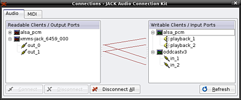

Oddcastv3-Jack
Archivierte Anleitung
Dieser Artikel wurde archiviert, da er - oder Teile daraus - nur noch unter einer älteren Ubuntu-Version nutzbar ist. Diese Anleitung wird vom Wiki-Team weder auf Richtigkeit überprüft noch anderweitig gepflegt. Zusätzlich wurde der Artikel für weitere Änderungen gesperrt.
Hinweis:
Diese Anwendung ist für den Soundserver jack konzipiert und setzt eine solide Systemkonfiguration und die in Tonstudio/Konfiguration beschriebenen Einstellungen vorraus.
Zum Verständnis dieses Artikels sind folgende Seiten hilfreich:
Oddcastv3-Jack  bietet einen jack-Anschluss um Audio-Streaming-Formate zu Icecast, Icecast2- und SHOUTcast-Servern zu senden. Oddcastv3-Jack muss selbst kompiliert werden [7].
bietet einen jack-Anschluss um Audio-Streaming-Formate zu Icecast, Icecast2- und SHOUTcast-Servern zu senden. Oddcastv3-Jack muss selbst kompiliert werden [7].
Installation¶
Folgende Pakete müssen installiert [1] werden:
libjack0.100.0-dev (universe, [2])
libvorbis-dev - für das Ogg Vorbis Format
libflac-dev - - für das Flac Format
libfaac-dev (multiverse, [2]) - für das Format AAC
liblame-dev (multiverse, [2]) - für das Format MP3
Paketliste zum Kopieren:
sudo apt-get install libjack0.100.0-dev libvorbis-dev libflac-dev libfaac-dev liblame-dev
sudo aptitude install libjack0.100.0-dev libvorbis-dev libflac-dev libfaac-dev liblame-dev
Anschließend lädt man von der Projektseite die aktuelle Version von Oddcastv3-Jack im Format tar.gz herunter und entpackt diese [5]. Nun muss das Programm noch kompiliert werden [7].
Als Beispiel für einen Jack-Anschluss dessen Signal Oddcastv3-Jack an einen Server sendet dient hier:
Benutzung¶
Zunächst muss der Soundserver jack gestartet werden [8]. Der Audioplayer XMMS mit dem Zusatz xmms-jack kann beispielsweise als Jack-Client ein Signal liefern. Dieses Signal wandelt Oddcastv3-Jack in das gewünschte Streaming-Format um und sendet es an den Streaming-Server. Die Ausgabe des Befehls
jack_lsp
gibt Auskunft über die vorhandenen Jack-Anschlüsse. Als Beispiel:
alsa_pcm:capture_1 #Alsa Soundkarte LineIn Links alsa_pcm:capture_2 #Alsa Soundkarte LineIn Rechts und Mono-Mikrofon alsa_pcm:playback_1 #Alsa Soundkarte Ausgabe Links alsa_pcm:playback_2 #Alsa Soundkarte Ausgabe Rechts xmms-jack_7406_000:out_0 #XMMS Ausgabe Links xmms-jack_7406_000:out_1 #XMMS Ausgabe Rechts
Unter /usr/share/doc/<pfad zu oddcastv3-jack-Version>/examples bringt das Programm Beispiel-Konfigurationen mit. Anhand einer Beispiel-Konfiguration und der Jack-Anschlüsse ergibt sich der Befehl zum Senden des XMMS-Signals als Ogg Vorbis-Stream:
oddcastv3 -c oddcast_OggVorbis.cfg xmms-jack_7406_000:out_0 xmms-jack_7406_000:out_1
Jack-Steuerung¶
 Die erfolgreiche Verbindung wird auch in der Jack-Verbindungsübersicht dargestellt (s. Bild) [8]. Dort kann auch die Verbindung zur Soundkarten-Ausgabe getrennt werden, um die Soundausgabe anderen Anwendungen zur Verfügung zu stellen, ohne den Stream zu unterbrechen. Ebenso können andere Jack-Anschlüsse zum Stream geschaltet werden, womit die Kreativität freien Lauf hat.
Konfiguration¶
Eine Beispielkonfiguration zum Senden eines Stereo-Audio-Streams an einen Icecast2-Server:
#oddcast_OggVorbis.cfg #Server-Einstellungen Server=localhost # Hostname oder ip-Adresse des Icecast Servers Port=8000 # Port auf dem zum Icecast Server verbunden wird ServerPassword=PASSWORT # Das Passwort des Benutzers source auf dem Icecast Server ServerType=Icecast2 # Icecast2 ist eine gute Wahl! Weitere Möglichkeiten: Icecast, Shoutcast ServerMountpoint=/stream # Einbindepunkt auf dem Icecast Server ServerPublic=1 # Erlaubt das senden der Metadaten an die Yellow Pages Server AutomaticReconnectSecs=10 # Sekunden, nach denen bei Verbindungsverlust automatisch wiederverbunden wird #Encoder-Einstellungen Encode=OggVorbis # OggVorbis ist eine gute Wahl! Weitere Möglichkeiten: Ogg FLAC, MP3 Lame, AAC BitrateNominal=128 # Die Bitrate die der Encoder nicht überschreiten soll; zur Bandbreiten-Begrenzung NumberChannels=2 # Musik wollen wir in Stereo hören, für Sprechfunk reicht Mono OggQuality=1 # Ogg-Qualitätsmaß ( -1.0 bis 10.0) Samplerate=44100 # Samplerate in Hertz; gängige Werte: 48000, 44100, 22050, 11025 #YP-Einstellungen/Metadaten ServerStreamURL=http://wiki.ubuntuusers.de/Icecast2 ServerName=Ubuntu-Icecast2-Test-Radio ServerDescription=Dies ist die Beschreibung des Testservers! ServerGenre=Rock #Erweiterte Einstellungen ExternalFile=/tmp/song LogLevel=1 LogFile=oddcastv3.log SaveAsWAV=0 OutputControl=SERVER,GENERAL,OUTPUT
- Erstellt mit Inyoka
-
 2004 – 2017 ubuntuusers.de • Einige Rechte vorbehalten
2004 – 2017 ubuntuusers.de • Einige Rechte vorbehalten
Lizenz • Kontakt • Datenschutz • Impressum • Serverstatus -
Serverhousing gespendet von